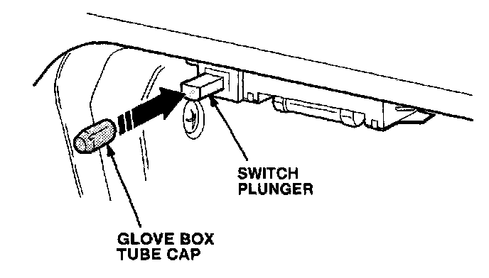

Interior - Glove Box Light Stays ON
September 21, 1993BULLETIN NO.
92-026
[NEW] YEAR
1991-93
1994
MODEL
LEGEND
INTEGRA
VIN APPLICATION
See VEHICLES AFFECTED
Glove Box Light Stays On
(Supersedes 92-026, dated September 15, 1992)
SYMPTOM
The glove box light stays on when the glove box lid is closed. This is noticeable at night when the headlights are on and the inside of the car is dark; you can see a glow around the glove box lid.
PROBABLE CAUSE
The glove box switch plunger is too short.
VEHICLES AFFECTED [NEW]
LEGEND: All 1991 - 93
INTEGRA: 1994 3-door
GS-R: Thru VIN JH4DC2...R001075
LS: Thru VIN JH4DC4...R5009083
CORRECTIVE ACTION
Install the glove box tube cap listed under PARTS INFORMATION to lengthen the switch plunger.
1. Using a sharp utility knife, shorten the glove box tube cap to 12 mm.

2. Press the tube cap over the glove box switch plunger.
3. Turn the headlights on, and confirm that the glove box light goes off when the glove box lid is closed.
PARTS INFORMATION
Glove Box Tube Cap: P/N 34254-SP0-308 [NEW]
WARRANTY CLAIM INFORMATION
In warranty:
The normal warranty applies.
Out of warranty:
Any repair performed after warranty expiration may be eligible for goodwill consideration by the District Service Manager or your Zone Office. You must request consideration, and get a decision, before starting work.
Operation number: 715010
Flat rate time: 0.2 hour
Failed P/N: 34254-SP0-A03 Legend
34254-SM4-013 Integra [NEW]
Defect code: 066
Contention code: B03

Disclaimer